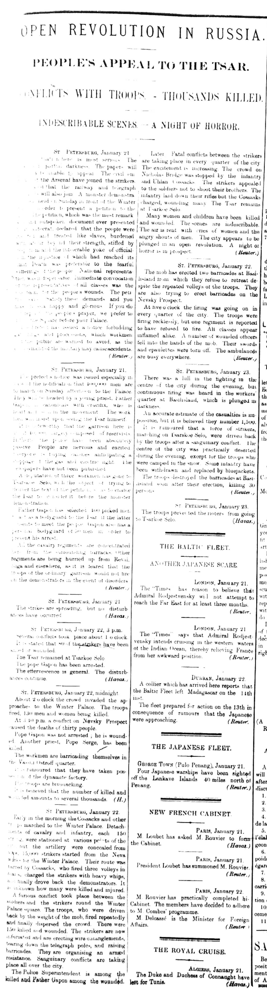

The Russian Revolution of 1905 began with Tsar Nicholas II attempting to transform the Russian government from an autocracy to a monarchy (Smith). His attempt for a new system of government led to political and social unrest across the Russian Empire. Although this movement originally began many years before 1905, the “Bloody Sunday” massacre on the 22nd of January of that year is known to have sparked this revolution (Shimazu). When a bunch of workers, specially the poor, took on the streets and made their way to Tsar’s Palace in hopes of presenting a petition for better working conditions, they were welcomed with gunfire. Worker strikes, urban uprisings, and peasant revolts continued over the next several years (Heywood).
Now this is all just basic research that anyone can learn about using the internet. However, I wanted to go on further into this topic as it caught my attention while I was reading the Egyptian Gazette newspaper. Before hand, I had no clue about this event in history. Being in the class of Microhistory, I have been given the opportunity to access the archives, or newspaper articles, of the Egyptian Gazette. With this source, I was able to look into fresh insights of the roles individuals, social groups, and political parties played throughout the Russian Revolution.

As I did my search query, I wanted to see what this newspaper had to say about the “Bloody Sunday” massacre. Therefore, I looked through the content folder for January 22nd of 1905 but no luck. However the following day, January 23rd, the Egyptian Gazette was full with information regarding this terrible event. According to the newspaper, it all began around 2 o’clock when huge crowds marched to the Winter Palace to present a petition to Tsar. The petition said, “Satisfy these demands and you make Russia happy and glorious. If you do not reply to the people’s prayer, we prefer to die in the Square before your Palace”, and sadly that’s what happened. Soon, the crowd started to run away and rapidly barricaded themselves across the city. Reading insights like, “troops were firing recklessly… The air is rent with cries of women and the angry shouts of men”, heavily portrays a tense mood. This day, full with unpleasant and dreadful memories for many, has come to be known as the “Bloody Sunday”.
But why, why and how did all of this start? What were the reasons that led to the Revolution in Russia? Looking through relevant posts I was able to find the factors that played a major role in this, other than the Bloody Sunday. Anthony Muniz argues in his blog post that they are four main factors. Things such as huge gaps between social classes, poor economy, land ownership laws, and “anger amongst the educated class”. Although I agree with Muniz, all of these problems wouldn’t have occurred if the Russo-Japanese War didn’t happen several years before. The citizens of Russia rose in revolutionary groups as they saw Tsar Nicholas II as a weak leader. Civilians didn’t just simply surrender. They immediately rebeled against Tsar’s inhuman actions in a fight that would go on throughout the next 3 years. The question is, will Nicholas II’s actions to preserve his autocracy have serious consequences or will his power over the military suppress any opposition? Jonathan Cannon was able to answer this in his blog post: “if the Tsar keeps the support of the army he can maintain power”. Conversely, his power over the military declined as soldiers began to support and fight alongside the rebels. Even so, in the end, the Russian government “won” as the Tsar remained absolute leader. While this may be true, peace only came about when promises were made to the citizens of a “people’s government” with amendments to come and a new Constitution.
Works Cited:
Heywood, Anthony, and Jon Smele. The Russian Revolution of 1905 : Centenary Perspectives. Routledge, 2005. EBSCOhost, search.ebscohost.com/login.aspx?direct=true&db=nlebk&AN=563956&site=eds-live&scope=site.
Naoko SHIMAZU. “Views from the Trenches: New Year’s Truce, Bloody Sunday and Japanese Attitudes toward the 1905 Revolution in Russia.” Horizons: Seoul Journal of Humanities, vol. 5, no. 2, Dec. 2014, pp. 195–208. EBSCOhost, search.ebscohost.com/login.aspx?direct=true&db=hus&AN=101030349&site=eds-live&scope=site.
Smith, S. A. The Russian Revolution : A Very Short Introduction. Oxford University Press, 2002. EBSCOhost, search.ebscohost.com/login.aspx?direct=true&db=nlebk&AN=100322&site=eds-live&scope=site.